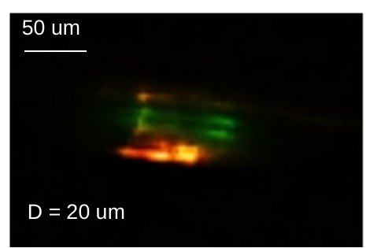
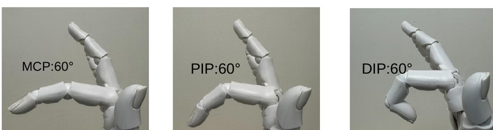

May – July 2026
Nanyang Technological University, Singapore
Centre for Bio-Devices and Bio-Informatics
Mentor: Xiyu Sun. Supervisor: Prof. Yu-Cheng Chen
Flexible fiber microlaser for finger-joint health detection
A stress sensor made from a stretchable optical fiber. Tiny microbubble cavities in a dye-doped PMMA fiber act as lasers. When the fiber stretches, the cavities deform and the spacing between laser modes grows, so the spectrum reports the stress.
I fabricated the fibers and tuned the polymer: I compared 15k, 120k and 350k molecular-weight PMMA and chose 350k for its strength and stretch. I then characterized lasing and stress response under a laser microscope with a spectrometer, and showed how fibers along a finger could estimate joint angles for hand-mobility assessment.
- 0.054 nm/MPa
- Sensitivity
- R² = 0.99
- Linearity of FSR vs. stress
- 3.03 MPa
- Limit of detection
- 14.45 µJ/mm²
- Lasing threshold

